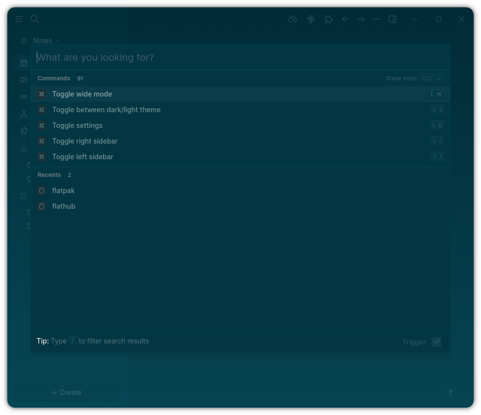
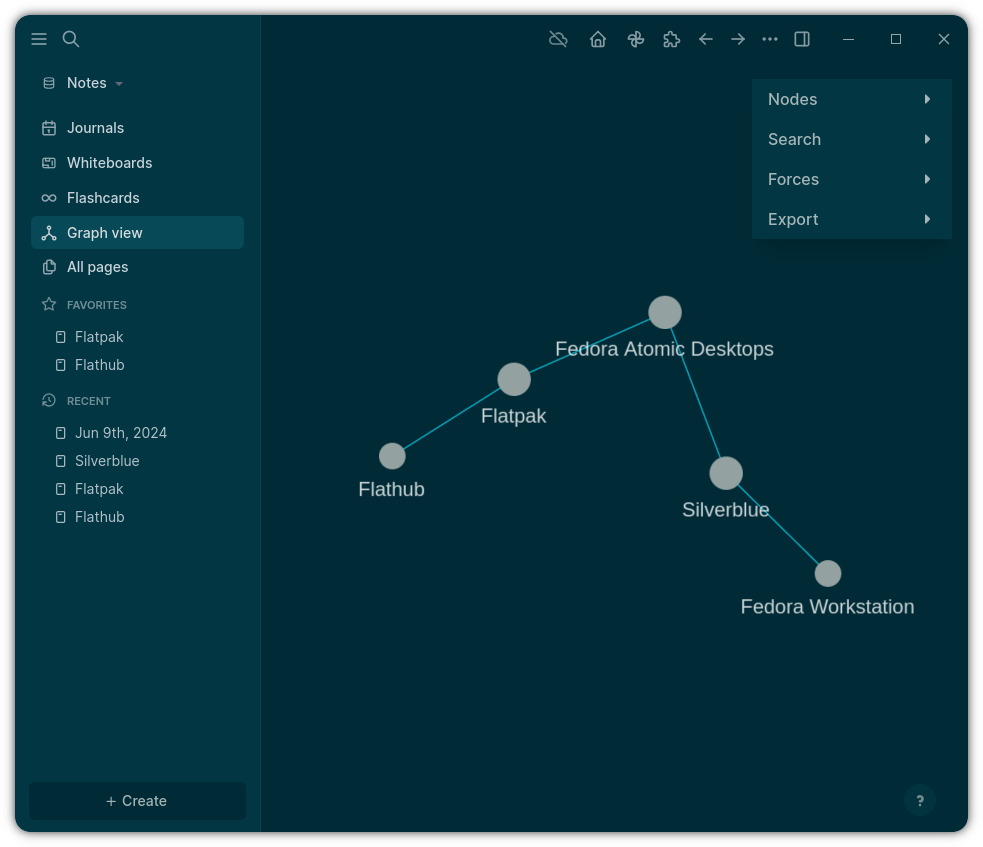

Logseq 对比评测：块级原生查询 vs 插件堆砌的路线之争
在个人知识管理工具这片红海里，Logseq 走了一条与 Obsidian 截然不同的路线——核心功能原生硬砸、插件只做补充。用过几款同类之后，我终于想把这条差异讲清楚。
个人知识管理这个赛道，已经不是"有没有用"的问题，而是"你愿意为哪种哲学买单"的问题了。Markdown 纯文本、双链、图谱，这几个要素拼出了 Obsidian、Logseq、Heptabase 等一整排选项。我在这条路上试错了大概两年，从 Obsidian 全家桶玩到 Heptabase 的白板流，最后留下的却是 Logseq——不是因为它没有槽点，而是它做对了一件我绕不开的事：把结构化这件事从"插件给你凑出来"变成了"底层就有"。
定位：这个类目里它是什么位置
先把坐标系摆出来。Obsidian 靠插件生态起势，1900+ 插件覆盖从任务到白板到论文管理几乎所有场景，但代价是每个功能都像接了一个转接头——能用、够用、但总有接缝感。大厂 Notion 把数据库做成了护城河，但 Markdown 兼容性差、数据锁得死，用户始终有一种"哪天 Notion 不干了我该怎么办"的隐忧。而 Logseq官网 明确宣传的路线是：核心三件事——大纲、链接、结构化查询——全部原生实现，插件市场只负责界面增强和生态补齐。
这条路线的好处是底层稳。坏处是它的学习曲线不是插件级的，而是范式级的。你得先接受"块（block）才是最小知识单元"这件事，才能用好它。很多人第一次接触会觉得写个东西怎么还要在每个条目前面加 - 或者 *，但习惯了之后就回不去了。所以官方下载的安装包里已经内置了块语法的自动补全提示和示例模板，降低了第一次上手的门槛。
差异化一：块级原生查询，开箱即用的数据层
这是我留下来的根本原因。
在 Logseq 里，你写的每一条都可以是一个块，每个块可以挂属性。属性就是 key:: value 这种写法，priority:: high、deadline:: 2026-11-01、owner:: 张三，想挂多少挂多少——它不做限制。然后你可以用原生查询把它们捞出来：
{{query (and (task TODO) (property priority high))}}这一行就把所有高优先级未完成的任务汇总出来，不是插件，是底层引擎直接算的。表格视图里属性自动变列，你可以按优先级排序、按项目分组、按日期筛选，就像在电子表格里一样自然。要是对查询语法还不熟，Logseq文档里有完整的括号语法参考表和实际项目案例，照着抄两遍就上手了。
我之前在 Obsidian 上用 Dataview 插件也能做类似的事，但 Dataview 的查询语法更重、性能在笔记多了之后会掉，而且它本质上是个"外挂引擎"——Markdown 文件本身没有被结构化，是 Dataview 在运行时解析出来的。Logseq 反过来：属性就是 Markdown 的一部分，你用任意文本编辑器打开都能看到完整的 key:: value，不依赖任何插件或特定渲染器。

差异化二：别名 alias 解决同义词碎片问题
这个小功能我特别想单独拎出来，因为它精准地戳中了多人协作和长期积累的一个真实痛点：同一个东西有好几个名字，知识被切碎了。
你写「CAP 定理」，队友写「CAP Theorem」；有时候写「JavaScript」，有时候图省事写「JS」；项目组老成员习惯说「老杨」，新文档都写全名「杨先生」。如果分别建页面，就产生了三份孤立的反向引用、三份图谱节点。Logseq 的 alias:: 属性让你只维护一份正式页面：
alias:: JS, JavaScript
alias:: CAP 定理, CAP Theorem
alias:: 老杨, 杨先生设完之后，任何块里写 [[JS]] 或者 [[CAP Theorem]]，点击自动跳转到正式页面，反向引用也全部正确收录——不会丢。这比 Obsidian 的别名更彻底，因为 Obsidian 的别名更多是导航层面的便利，Logseq 的别名直接进了图谱和查询引擎。
差异化三：PDF 阅读器的独立主题体系
这个点可能最不"核心"，但对我这种重度阅读者来说特别舒服。
Logseq 的 PDF 阅读器有三种独立主题：Standard（原样显示）、Dark（智能反色）、Eye Care（米黄底深绿字护眼）。关键是它和编辑器的主题是解耦的——你可以编辑器用浅色保持干净清爽，PDF 阅读器切深色或者护眼主题，互不干扰。而且深色主题不是简单的像素反色，彩色图表会保留原色调只调亮度，扫描版 PDF 会做对比度补偿，公式和代码块会被特殊处理避免符号乱掉。
我每天至少两小时论文和技术文档，之前在其他工具上要么忍受白底刺眼、要么反色后彩色图表糊成一团。Logseq 这套独立主题我用上就没再换回 Standard——米黄底深绿字那个色调，跟 Kindle Paperwhite 很像，长时间看不累。

取舍：它为这些优势付出了什么
说了三个优点，得讲清楚它的代价。Logseq 不是没有缺点，而是它的缺点恰好就是它优点的背面。
第一个代价是学习曲线的陡峭。你得理解块是什么、属性怎么写、查询语法 (task TODO) 和 (property priority high) 分别怎么拼。Obsidian 用户过来可能半天找不到 Dataview 在哪里——因为 Logseq 原生就有，你只需要学会那层括号语法。反过来，如果你的知识管理全靠插件拼凑，Logseq 会让你觉得"这不是我要的工具"。
第二个代价是插件生态的体量差距。Obsidian 有 1900+ 插件，Logseq 插件市场目前大约 150+。这意味着某些 Obsidian 上有的小众工具你在 Logseq 上找不到——比如更花哨的白板插件、更细分的任务面板、某些学术场景的联动。但换个角度想：Obsidian 用户过来发现想要的功能 Logseq 没有，先别急着装插件，大概率 Logseq 原生的块引用和查询已经覆盖了你的需求。我自己就是这样，刚过来时装了三四个插件，半年后全部删掉了。
第三个代价是它的 Windows 桌面版和安卓端迭代速度不如 Obsidian 稳定。Obsidian 的桌面端和移动端维护更勤，Logseq 在非 macOS 平台上偶尔会有小 bug。不过核心功能从来没出过问题——块、查询、别名这些底层稳定，偶尔的 UI 抖动忍忍就过去了。
选购结论：什么样的人选它
最后给个明确的判断。
如果你需要的是结构化数据驱动的个人知识库——用属性管任务、用查询自动汇总、用别名防碎片、用表格视图做项目看板——Logseq 是目前最干净的选择。它的核心功能全部原生、数据格式通用、不锁你。
如果你需要的是插件生态什么都能做——从白板到日历到论文管理到 AI 对话都想装一个就有——Obsidian 还是那个成熟的选择。
如果你在 Notion 和 Logseq 之间纠结，核心看一件事：你的数据是不是需要导出就能丢进 Git 仓库、任意编辑器都能打开还能看全结构？如果是，选 Logseq。Notion 的数据库导出格式一直在变，你永远猜它下次又要换什么。
对我来说，Logseq 最打动我的不是某个单独功能，而是它让我重新想了一遍"知识到底怎么组织"这件事——块才是原子，属性才是结构化，查询才是自动汇总。这三件事在它那里是一层，不是外挂。
我每天的笔记、任务、论文批注、项目看板全部在 Logseq 里了，大概三万多个块，查询跑得很流畅。有人可能觉得这是个小众选择，但我宁愿在一条干净的路上走到头，也不想在插件的沼泽里越陷越深。想试试的话可以自己找来看，再决定要不要把笔记迁移过来。
说到这里顺带提一下：这套资料我在三个仓库都放了一份，GitHub 上维护着完整版，Gitee 和 GitCode 作为备份镜像方便国内访问，同步保持最新。